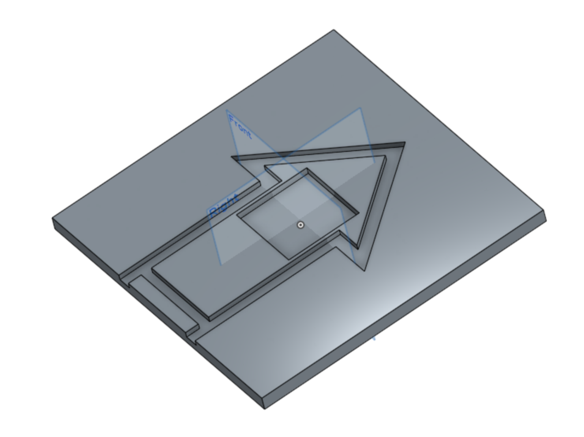
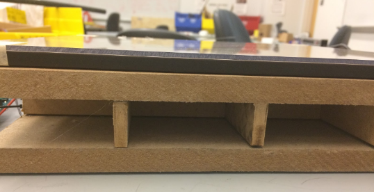

Goals
None of us comes from a mechanical background, so we wanted to challenge ourselves to build a wooden and structurally-sound board that would require us to understand materials and the process of fabricating different components, utilizing the capabilities of the machine shop. In addition, we were excited to learn and think through the different systems integration that we would have to do to: house the electrical components with the mechanical board, and communicate between the different electrical components and a website.
Individual Learning Goals:
Bill's Learning Goals: Learn about basic mechanical designs and materials. Get better working on a project that involves different engineering aspects. Understand the basics to build up a website.
Casey's Learning Goals: Understand how electronics work in theory, as well as in real life. The complexities that go into electronics (twisting of wires and electromagnetic waves,..) are really interesting and necessary when building circuits in real life.
Cynthia's Learning Goals: Learn about integrating web development capabilities with electrical components, as well as challenge myself to learn how to think through mechanical designs.
Nora's Learning Goals: Learn about mechanical design and the fabrication process.
Sprint Reviews
Interested in how we progressed through this project? Below you can find details about how POE DDR came to be! Sprints were 2 weeks each.
Sprint 1
Team DDR has been formed! We wanted the board to:
Have a good feel - We wanted a DDR mat that felt solid and good to step on. This led us to make the board out of wood (MDF) instead of making a cloth pad.
Be modular - Since the board would probably be heavy, we wanted to make sure that you could easily move and disassemble the board.
During Sprint 1, we started to explore different web game designs for DDR, as well as web packages for game graphics. We decided to implement web package such as Phaser to make our web component, but then realized that we really just wanted an animation package for javascript, so we went with GreenSock (GSAP). We designed and made initial MVP web pages that implement the basics of our DDR game. In addition, we started working on the communication between Arduino and web through the Node.js package called Serialport. We connected a 4-button strip to the Arduino, and integrated the Arduino with web, and finally we were able to identify and show which button is pressed on the website. In terms of mechanical work, we came up with the idea of creating pieces that connect through dovetail joints, in addition we decided to go with polycarbonate to cover our LEDs and MDF with springs.
Sprint 2

During sprint 2, we worked on integrating pressure sensing to pads and to synchronize and send data between the arduino and the web game. We also used greensock to make animations for the web game, and started prototyping the wooden board pieces. One of the main decisions that we made this sprint was to panel saw pieces to make more exact cuts, as well as transition to using laser cutting for more precise cuts.
Sprint 3

We kept our website design, and integrated both the LED lighting system and pressure sensor to the web game to make sure that the timing for all of the arrows moving are synchronized. In addition, we implemented Heroku App on the website which enabled us to create apps and connect databases. Also, we put a playable song on the website which syncs with the game. We continued working on the website, and improved the UI design using Greensock animations to have play and pause functionality. By integrating a LED with the Arduino and our website, we were able to light up the LED in different colors to show whether the player pressed the correct button at the correct time.